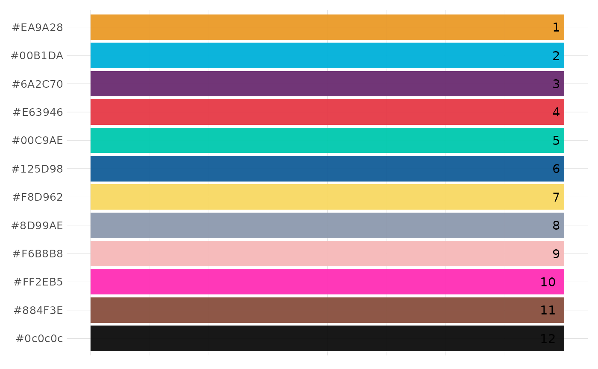

This function plots a list of colours
See also
Other Themes:
gg_fill_customs(),
lares_pal(),
theme_lares()
Examples
# Simply pass a vector
pal <- lares_pal("simple")
plot_palette(pal)
#> Limited to 12 colours. Overwrite with 'limit' parameter

# Or fill + color named vector
pal <- lares_pal("pal")
plot_palette(fill = names(pal), colour = as.vector(pal))
#> Limited to 12 colours. Overwrite with 'limit' parameter